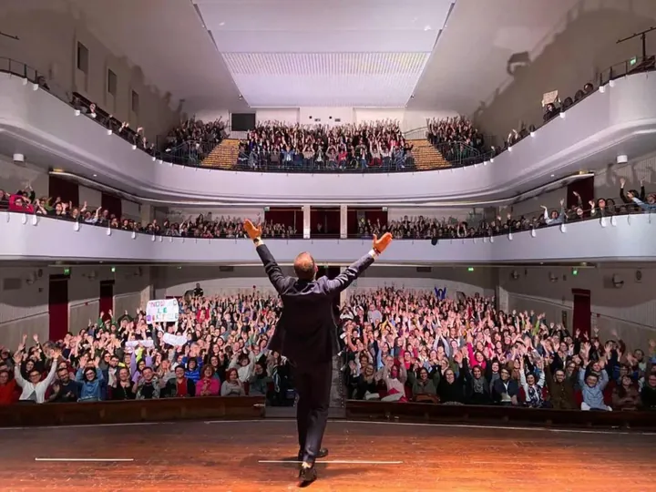

da gio 26 nov a mer 21 apr
Conegliano, su il sipario!
Il Teatro Accademia si conferma il cuore pulsante della cultura di Conegliano con la Stagione 2026-2027 " Conegliano su il sipario ", un cartellone di altissimo livello che unisce intrattenimento, riflessione e grandi interpreti della scena nazionale.
 Indicazioni
Indicazioni
- Costi e prenotazioni
- Costo non indicato · Prenotazione non indicata
- Programma
- Programma da verificare. Apri la fonte ufficiale per orari e possibili aggiornamenti.
- In caso di maltempo
- Nessuna indicazione specifica pubblicata.
- Note
- Acquisito automaticamente dalla fonte.
L’EVENTO
Descrizione completa
Il Teatro Accademia si conferma il cuore pulsante della cultura di Conegliano con la Stagione 2026-2027 " Conegliano su il sipario ", un cartellone di altissimo livello che unisce intrattenimento, riflessione e grandi interpreti della scena nazionale.
La rassegna si apre giovedì 26 novembre con Ambra Angiolini in " La misteriosa scomparsa di W ", un'opera intensa sulla ricerca dell'identità, per poi addentrarsi domenica 6 dicembre nelle atmosfere esistenzialiste e farsesche di " Rosencrantz e Guildenstern sono morti " con Francesco Pannofino, Francesco Acquaroli e Paolo Sassanelli. Il mese di dicembre si chiude mercoledì 16 con le sfumature noir de "L'amante " di Pinter, interpretato da Giorgio Marchesi e Simonetta Solder, un raffinato duello psicologico sulla vita di coppia.
Il nuovo anno riparte domenica 10 gennaio all'insegna della commedia brillante con Martina Colombari in " Venerdì 13 ", seguita giovedì 21 gennaio dall'ironia travolgente di " Lungs | Polmoni " con l'affiatata coppia Maria Amelia Monti e Gigio Alberti. Martedì 9 febbraio lo spessore classico di Luigi Pirandello rivive in " Uno, nessuno, centomila " con Primo Reggiani e Jane Alexander, mentre mercoledì 10 marzo la scena si accende con gli equivoci di " Contrazioni pericolose " insieme a Rocío Muñoz Morales, Giorgio Lupano e Gabriele Pignotta.
Verso la conclusione, la rassegna tocca corde profonde giovedì 25 marzo con Simone Cristicchi in " Franciscus ", prosegue mercoledì 7 aprile con l'intensità drammatica di Nancy Brilli in " Il padrone " e celebra la chiusura mercoledì 21 aprile con il ritmo spumeggiante di Tosca D'Aquino e Simone Montedoro in " Cena con sorpresa ".
Tutti gli spettacoli iniziano alle ore 21.00.
IL PROGRAMMA
Programma e orari
Appuntamenti raccolti dalle fonti elencate. Dove manca un orario, non è ancora disponibile in questa scheda.
Programma pubblicato
- 2026-11-26 — 2026-11-26 · 21:00:00
- 2026-12-06 — 2026-12-06 · 21:00:00
- 2026-12-16 — 2026-12-16 · 21:00:00
- 2027-01-10 — 2027-01-10 · 21:00:00
- 2027-01-21 — 2027-01-21 · 21:00:00
- 2027-02-09 — 2027-02-09 · 21:00:00
- 2027-03-10 — 2027-03-10 · 21:00:00
- 2027-03-25 — 2027-03-25 · 21:00:00
- 2027-04-07 — 2027-04-07 · 21:00:00
- 2027-04-21 — 2027-04-21 · 21:00:00
INFORMAZIONI UTILI
Prima di partire
- Controllare la fonte prima di partire.
ORGANIZZAZIONE